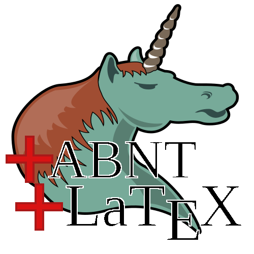
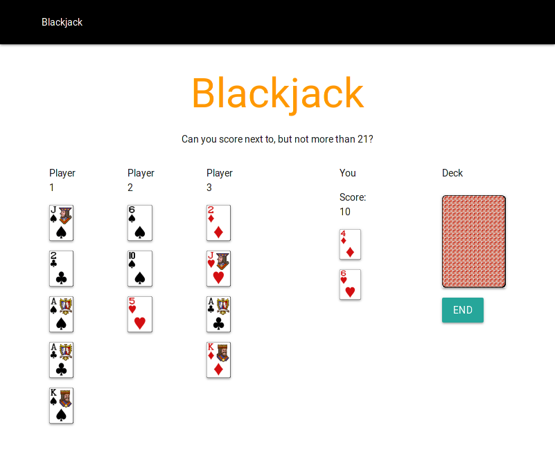
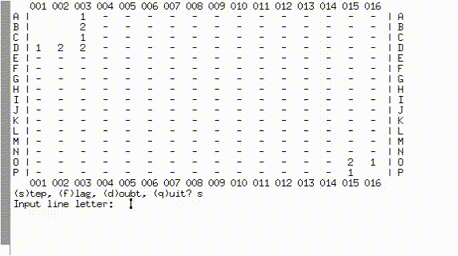
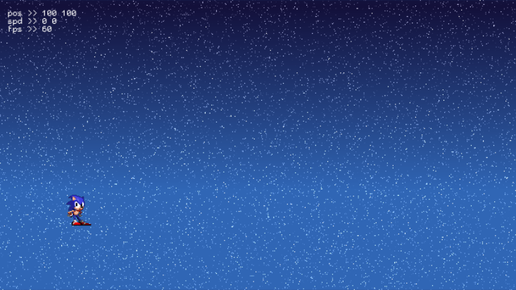
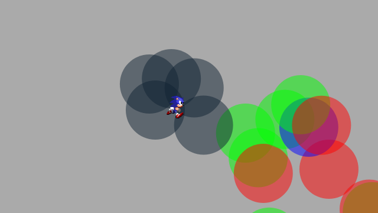
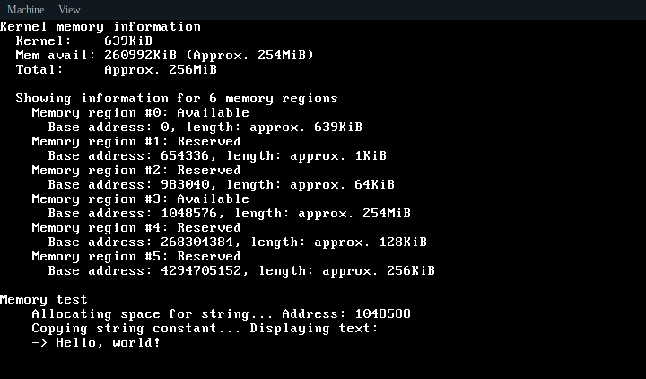
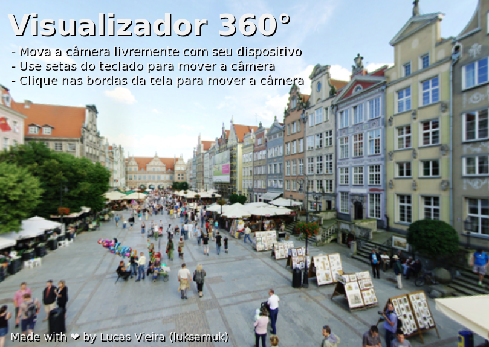
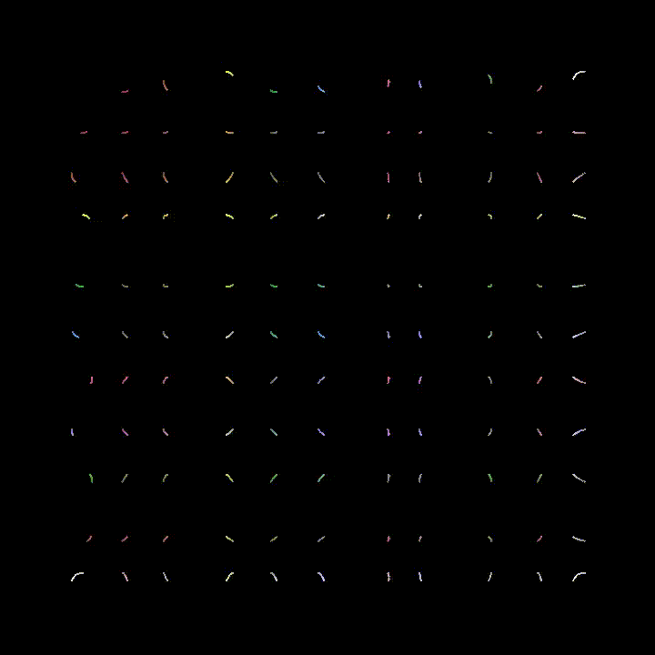
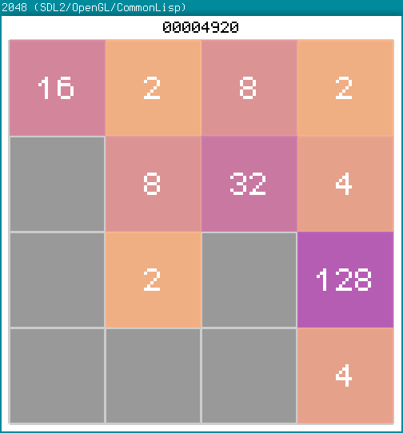

Esta página é uma coleção de alguns dos meus projetos de maior relevância. Aqui postarei links e algumas referências para estes projetos.
As seções estão separadas em colunas, de forma que você possa ler as descrições em Português e em Inglês.
This page is a collection of some of my projects of greater relevance. I'll post here some links and references to these projects.
The sections are separated in columns in such a way so you can read the descriptions in Portuguese and English.
Índice
Projetos Comunitários / Community Projects
Common Lisp Brasil
Common Lisp Brasil é a comunidade brasileira para evangelização da linguagem Common Lisp. Somos bem receptivos a novas pessoas que estejam interessadas em aprendê-la. Apesar de o foco principal do nosso canal no Telegram estar em atrair brasileiros, nós também recebemos falantes do Inglês.
Common Lisp Brasil is the brazillian community for evangelization of Common Lisp language. We are very receptive to new people who are interested in learning it. Though the main focus of our Telegram channel is in attracting brazillian folks, we also receive speakers of English language.
Projetos Pessoais / Personal Projects
Oficina Framework

Oficina Framework é uma engine de games completa que escrevi há alguns
anos atrás, inicialmente projetada para jogos 2D. Sendo escrita
principalmente em C++, esta engine usa bibliotecas como SDL2, OpenAL e
OpenGL, para gerenciar um conjunto de subsistemas. A partir da versão
2.0, Oficina também começou a ter um sistema avançado de scripting
através das linguagens Scheme e Lua, que podem ser manipuladas dentro
de qualquer jogo construído com esta engine, para realizar codificação
ao vivo.
Ambas as versões existentes nunca chegaram à estabilidade, mas sua função principal foi a de uma oficina onde experimentei com conhecimentos mais avançados de programação. O desenvolvimento começou em 2012, e parou em 2017.
Abaixo, há uma lista de links com provas-de-conceito para a Oficina Framework. Eles estão organizados por data.
Oficina Framework is a complete game engine I've written a few years
ago, initially designed for 2D games. Written mainly in C++, this
engine uses libraries such as SDL2, OpenAL and OpenGL to manage a set
of subsystems. Starting from version 2.0, Oficina also began to sport
an advanced scripting support by using languages Scheme and Lua, which
can be manipulated inside any game built with this engine, to perform
live coding.
Both existing versions never reached stability, but their main role was to be a workshop where I experimented with more advanced knowledge on programming. Development started in 2012, and halted around 2017.
Below is a list of proof-of-concept links for Oficina Framework. They are organized by date.
- Oficina Framework v2.0.11: Engine Test
- Oficina Framework v2.0: Early in-game REPL (showcased)
Features a roughly incomplete Sonic The Hedgehog platformer.
See the source code for this example. - Oficina Framework v1.3b: Sonic The Hedgehog game clone
Very mature, with many things already implemented.
See the source code. - Oficina Framework v1.3b: Super Mario Bros. game clone
- Oficina Framework v1.3b: Super Mario Bros. game clone (early)
- Oficina Framework v1.2: Flappy Bird game clone
- Oficina Framework v1.1: Circular movement
Live coding session showcasing ease of coding. - Oficina Framework v1.0: Early engine test
Powerlisp
Powerlisp é uma ferramenta de automatização de tarefas para usuários
avançados de sistemas Unix. Escrita em Common Lisp, esta ferramenta
provê um backend para qualquer ferramenta de seleção de opções, como
dmenu ou rofi, possibilitando ao usuário uma navegação em menus.
O usuário pode fazer várias tarefas através da ferramenta, como pesquisar diretamente na internet, usar o modo anônimo do browser para comandos subsequentes, selecionar entre seus sites favoritos, abrir aplicações favoritas, e até mesmo configurar novos submenus para suas próprias tarefas.
Powerlisp is a task automation tool for advanced users of Unix
systems. Written in Common Lisp, this tool provides a backend for any
selection tool, such as dmenu or rofi, enabling the user to navigate
through menus.
The user can do many tasks through the tool, such as directly searching over the internet, using the browser's incognito mode for his following commands, selecting between his favorite sites, opening favorite applications, even configure new submenus for his own tasks.
org-abntex2

org-abntex2 é um modelo para escrever artigos acadêmicos, sob as
normas da ABNT, utilizando Org no Emacs, para então ser exportado para
LaTeX. Este projeto resume-se, primariamente, a um template
modificável. Sendo assim, fica a cargo do acadêmico copiar o template
e adequá-lo às regras da sua universidade.
Este projeto adequa-se, por padrão, à Universidade que frequento. Por isso, modificações de acordo com o caso de uso e leitura cuidadosa do código são encorajadas.
org-abntex2 is a model for writing academic papers, under ABNT norms,
using Org on Emacs, so that it can be exported to LaTeX. This project
is, primarily, a modifiable template. Given that, the academic should
copy the template and adequate it to its University's rules.
This project adequates by default to the University which I attend to, so modifications according to use case and careful reading of the code are encouraged.
cl-ann

cl-ann é a implementação de uma rede neural artificial linear,
completamente escrita em Common Lisp, com o intuito de estudo.
Sua versão original foi escrita em C++, e o projeto possui um pequeno
system para testes que treina uma rede neural para realizar a operação
de ou-exclusive (xor).
cl-ann is the implementation of a linear, artificial neural network,
completely written in Common Lisp, with the intent of study.
Its original version was written in C++, and the project has a small
testing system which trains a neural network so that it can perform
the exclusive-or (xor) operation.
nand2tetris
Os projetos abaixo dizem respeito ao livro The Elements of Computing Systems, de Nisan e Schocken, normalmente apelidado de nand2tetris.
Estes projetos formam a base da implementação de um computador completo, feito do zero, sendo eles parte da toolchain de desenvolvimento para tal.
The projects below are related to the book The Elements of Computing Systems, by Nisan and Schocken, normally nicknamed nand2tetris.
These projects form the base of implementation of a compiler for a complete computer, built from scratch, those projects being part of the development toolchain for it.
cl-jackc (Jack Compiler)
cl-jackc é o compilador da linguagem Jack, a linguagem de alto-nível
apresentada no livro em questão. Este compilador, escrito em Common
Lisp, visa um projeto robusto e, por isso, é implementado de forma
modular, o que confere facilidade de execução de testes remotos para
cada parte do programa.
Esta linguagem é introduzida nos capítulos 9, 10 e 11 do livro, e o progresso do compilador pode ser acompanhado através do quadro de projetos do repositório e do status de seus testes automatizados.
cl-jackc is the compiler for Jack, the high-level language presented
in the book in question. This compiler, written in Common Lisp,
focuses on a robust project, and because of that, it is implemented in
a modular way, which provides ease of execution for remote tests for
each part of the program.
The language is introduced on chapters 9, 10 and 11 of the book, and the compiler's progress can be accompanied through the project board on the repository, and through the status of its automated tests.
cl-hackvmtr (Hack VM Translator)
cl-hackvmtr é o VM Translator para a plataforma Hack, do livro em
questão. Esta ferramenta, escrita em Common Lisp, é responsável por
traduzir o código da máquina virtual da linguagem Jack para o assembly
da plataforma Hack.
Este projeto foi construído de acordo com os capítulos 7 e 8 do livro, e atualmente é capaz de gerar assemblies adequadamente.
cl-hackvmtr is the VM Translator for the Hack platform, for the book
in question. This tool, written in Common Lisp, is responsible for
translating Jack virtual machine code into Hack platform assembly.
This project was built according to chapters 7 and 8 of the book, and currently is capable of generating assemblies correctly.
cl-hackasm (Hack Assembler)
cl-hackasm é o Assembler para a plataforma Hack, do livro em
questão. Esta ferramenta, escrita em Common Lisp, é responsável por
traduzir o código assembly da plataforma Hack para código de máquina
(pela especificação do livro, arquivos-texto onde cada linha
corresponde a uma instrução).
Este projeto foi construído de acordo com o capítulo 6 do livro, e atualmente é capaz de gerar código de máquina adequadamente.
cl-hackasm is the Assembler for the Hack platform, for the book in
question. This tool, written in Common Lisp, is responsible for
translating assembly code for the Hack platform into machine code
(which are, per the book's specification, text files where each line
corresponds to an instruction).
This project was built according to the book's chapter 6, and is currently capable of generating machine code correctly.
Games
cl-snake
cl-snake é um pequeno clone do game clássico Snake, escrito em Common
Lisp. O jogo foi um velor projeto, desenvolvido como uma forma de
melhorar meu conhecimento sobre a linguagem na qual foi construído.
cl-snake is a small clone of the classic Snake game, written in
Common Lisp. The game was an old project, developed as a way to
improve my knowledge on the language it was built in.
Blackjack

Este jogo foi escrito em JavaScript ES6, durante um curso de treinamento em desenvolvimento web frontend. O objetivo foi criar um jogo de cartas e implementá-lo usando um framework web específico. Acabei utilizando o Materialize do Google e criando este clone de Blackjack.
Como o jogo deveria ser simples, há uma quantidade de coisas que não foi feita. Todavia, o jogo está funcional, e pode ser imediatamente jogado clicando no link abaixo.
This game was written in JavaScript ES6, during a training course on frontend web development. The goal was to create a card game and implement it using a specific web framework. I ended up using Google's Materialize and creating this Blackjack clone.
Since the game was supposed to be simple, there is a number of things that weren't done. Howver, the game is functional, and can be played immediately by clicking on the link below.
ODS: Orbit Defense Strikeforce
Orbit Defense Strikeforce é um jogo de tiro espacial, onde você controla uma nave com movimento peculiar para destruir todos os seus inimigos. O jogo é curto, podendo ser terminado dentro de alguns minutos.
Este jogo foi feito para ser a minha submissão ao Lisp Game Jam 2018, que ocorreu em abril do ano relacionado. Na página do projeto, você encontrará notas em que eu falo a respeito do processo de desenvolvimento.
Orbit Defense Strikeforce is a space shoot-'em-up game which you control a ship with peculiar movement to destroy all your enemies. The game is short, and can be finished in a few minutes.
This game was built to be my submission to Lisp Game Jam 2018, taken place in April of the related year. In the project's page, you'll find notes where I talk about the development process.
Super BrickBreak
Super BrickBreak é um clone do clássico Breakout. Este jogo fazia
parte de uma coleção de minigames que anteriormente escrevi,
originalmente, usando Processing (com backend em Java), e então
reescrito em C++ (utilizando versões antigas da Oficina Framework).
A versão mais funcional, aqui mostrada, foi escrita em JavaScript,
utilizando um elemento 2D canvas, e pode ser jogada instantaneamente.
Este projeto também estava sendo reescrito em Rust, usando
WebAssembly, todavia está congelado por enquanto.
Mais informações podem ser encontradas na página do projeto. O
protótipo da versão em Rust/WebAssembly e links para os códigos podem
ser encontrados abaixo.
Super BrickBreak is a clone of classic Breakout. This game was part of
a collection of minigames which I previously wrote, originally using
Processing (with a Java backend), and then rewritten in C++ (using
older versions of Oficina Framework).
The most functional version, shown here, was written in JavaScript,
using a 2D canvas element, and can be played instantly. This project
was also being rewritten in Rust, using WebAssembly, however it is
frozen for now.
More information can be found on project's page. A prototype for the
Rust/WebAssembly version and links for source code can be found
below.
Underwater Adventures
Underwater Adventures é um pequeno e simples jogo de plataforma. Ele
foi feito como um teste final para um curso que fiz de Construct 2,
em 2017.
A parte mais relevante é que, como ele foi feito com a versão Free do
Construct 2, seu código tem um limite de 100 eventos, que foram
completamente usados; o movimento também foi programado com
comportamento estático, o que significa que nenhum movimento embutido
extra foi utilizado.
Ele foi exportado como um jogo HTML5, portanto ir à página do projeto fará com que você possa jogá-lo imediatamente.
Underwater Adventures is a small and simple platformer game. It was
made as a final test for a Construct 2 course I took, back in 2017.
The most relevant part is that, since it was built with Construct 2's
Free version, its code has a limit of 100 events, which were
completely used; movement was also programmed with static behaviour,
which means that no extra built-in movement was used.
It is exported as an HTML5 game, so going to the project's page will allow you to play it immediately.
9mine

9mine é um clone do Campo Minado, adaptado para console. Este projeto
em específico foi escrito em C puro, de forma que pudesse ser
executado e compilado no sistema operacional Plan 9 From Bell Labs.
Abaixo também está listado o post do blog que discute alguns aspectos
de desenvolvimento em C no Plan 9.
9mine is a clone of Minesweeper, adapted to console. This specific
project was built in pure C, in such a way that it could run and build
on the Plan 9 From Bell Labs operational system.
Below is also listed the blog post discussing some aspects of C
developent for Plan 9.
sonic-lisp

sonic-lisp é um clone da engine clássica de Sonic The Hedgehog. O
objetivo é replicar a física dos jogos clássicos do mascote o máximo
possível. Este projeto também está sendo escrito em Common Lisp, uma
vez que a intenção é explorar o que Common Lisp tem a oferecer, em
termos de desenvolvimento de jogos.
O jogo utiliza trivial-gamekit, um dos muitos systems disponíveis para
desenvolvimento de jogos na linguagem referenciada, e seu
desenvolvimento experimenta com a possibilidade de codificação em
tempo real: a maior parte do jogo é escrita enquanto o mesmo está em
execução.
O vídeo apresentado demonstra uma seção de codificação em que algumas habilidades foram implementadas em tempo real, exemplificando a forma como foi programado.
sonic-lisp is a clone of Sonic The Hedgehog's classic engine. The goal
is to replicate the physics of the mascot's classic games as much as
possible. It is also being written in Common Lisp, as the intent is to
explore what Common Lisp has to offer in terms of game development.
The game uses trivial-gamekit, one of the many game development
systems available on said language, and its development experiments
with the possibility of real-time coding: most of the game is written
while it is running.
The featured video demonstrates a coding session in which some abilities were implemented in real-time, exemplifying the way it was programmed.
Projetos menores / Minor projects
Abaixo, estão listados projetos de menor relevância. A maioria são projetos desenvolvidos a curto prazo, e sem pretensão de continuação.
Below are listed projects of minor relevance. The majority are projects developed in little time, with no pretension to continue.
wasm-platformer-rs

Prova-de-conceito de um jogo platformer usando Rust e WebAssembly. Atualmente, só possui um teste de colisão.
Proof-of-concept of a platformer game using Rust and WebAssembly. Currently has only a collision test.
kernel

Este é um kernel "de brinquedo" para x86, escrito como um exercício para programação bare-metal. Algumas de suas partes foram escritas baseado em alguns tutoriais e livros, que são referenciados no repositório do projeto.
This is an x86 toy kernel, written as an exercise on bare-metal programming. Some of its parts were written based upon some tutorials and books which are referenced on the project's repository.
brazil-holidays.el
Este é um pequeno arquivo auxiliar para o Emacs, que define alguns feriados brasileiros para uso na Org agenda ou no calendário.
This is a small helper file for Emacs, which defines some brazillian holidays for using on Org agenda or calendar.
panorama-viewer

Este projeto é um visualizador de fotos 360°, feito utilizando
JavaScript puro e a biblioteca THREE.js. Este visualizador tem suporte
mínimo a desktop, onde rotaciona-se a imagem através das teclas ou
clicando nos cantos da tela, e também tem suporte a alguns
smartphones.
A aplicação pode requerer boa quantidade de recursos da máquina, e bugs são esperados.
This project is a 360º photo viewer, made using pure JavaScript and
the THREE.js library. This viewer has minimal support to desktop,
where you can rotate the image through arrow keys or clicking on
screen corners, and also supports some smartphones.
The application may require a good amount of machine resources, and bugs are expected.
Harmonograph

Este projeto é um simulador que reproduz curvas de Lissajous (desenhos de equações paramétricas, intimamente ligadas a música e a padrões planetários), da forma como são desenhadas por um harmonógrafo.
O aplicativo pode ser utilizado a partir do seu código-fonte, que foi escrito em Common Lisp, ou pode ser transformado em um binário standalone. Para mais informações, veja o repositório.
This project is a simulator which reproduces Lissajous curves (drawings of parametric equations, intimately linked to music and planetary patterns), in the same way they are drawn by a harmonograph.
The application can be used from its source code, which is written in Common Lisp, or can be turned into a standalone binary. For more information, see the repository.
OpenGames

Este é um repositório de pequenos jogos de código aberto. Inclui o
anteriormente mencionado cl-snake, um clone de 2048 (vide foto), e
mais alguns projetos inacabados.
This is a repository of small open-source games. Includes the
previously mentioned cl-snake, a clone of 2048 (see pciture), and some
other unfinished projects.
YASWEG
Yet Another Static Website Generator é, como o nome sugere, um pequeno gerador de websites estáticos, escrito em Scheme para GNU Guile. O objetivo do projeto é criar uma API que possibilite declarar arquivos HTML que serão exportados estaticamente.
O projeto está funcional, mas não espere poder utlizá-lo apropriadamente, uma vez que ele foi feito com intuito meramente educativo.
Yet Another Static Website Generator is, as the name suggests, a small static website generator, written in Scheme for GNU Guile. The objective of the project is to create an API which allows to declare HTML files which will be statically exported.
The project is functional, but do not expect to use it appropriately, since it was made for merely educational purposes.
Miscelânea / Miscellaneous
study
Este é um repositório que utilizo para armazenar minhas notas e códigos, criados com o intuito de estudo, seja em faculdade ou ao acompanhar livros em específico.
This is a repository I use to store my notes and code, created for studying, be it in college or when reading specific books.